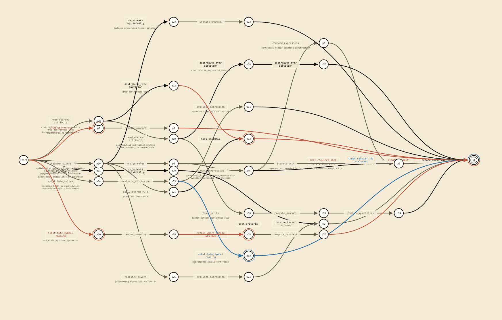
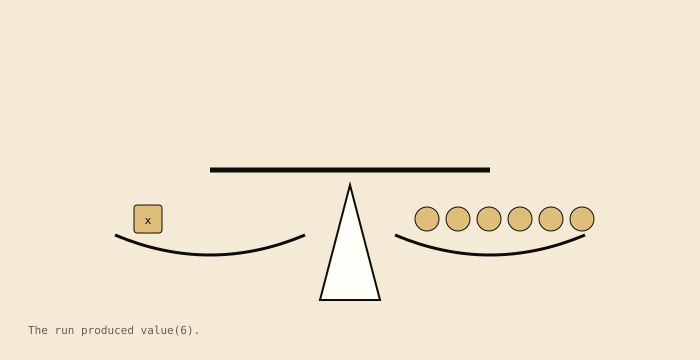
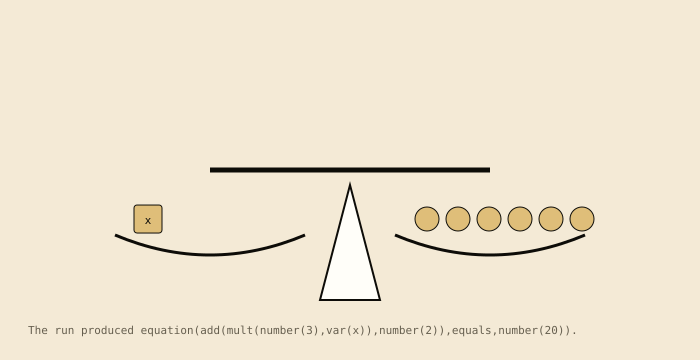
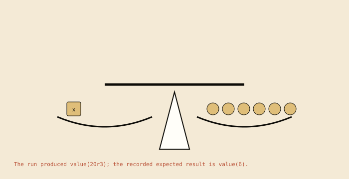

Validity review for this family: 10 reviewed and 0 unreviewed deforming transitions. Unreviewed rows retain rust-family styling.

Family path composite: the action paths of all the family's automata, merged at shared prefixes and identical suffixes. The labels are canonical action names. Its nodes are path points. Path points are not states of any single automaton. Loops are not unfolded.
1.balance_preserving_linear_solution

The run produced value(6). The scene is derived from the contract run (4tracesteps).Recorded transition graph. Local action names label the transitions.
Computed structure:linear_trace. no recorded branch or loop; the recorded transition graph has one accepting path. 5 states, 4 distinct actions, 0 branching states, 0 loop transitions; 4 static table rows and 4 observed table rows.
2.contextual_linear_equation_construction

The run produced equation(add(mult(number(3),var(x)),number(2)),equals,number(20)). The scene is derived from the contract run (6tracesteps).Recorded transition graph. Local action names label the transitions.
Computed structure:linear_trace. no recorded branch or loop; the recorded transition graph has one accepting path. 7 states, 6 distinct actions, 0 branching states, 0 loop transitions; 6 static table rows and 6 observed table rows.
3.distributive_expression_rewrite
No domain scene: the static scene emitter has no algebraic form for the expression_rewrite contract used by this automaton.
Recorded transition graph. Local action names label the transitions.
Computed structure:linear_trace. no recorded branch or loop; the recorded transition graph has one accepting path. 6 states, 4 distinct actions, 0 branching states, 0 loop transitions; 5 static table rows and 5 observed table rows.
4.drop_distributed_term
No domain scene: the static scene emitter has no algebraic form for the expression_rewrite contract used by this automaton.
Recorded transition graph. Local action names label the transitions.
Computed structure:linear_trace. no recorded branch or loop; the recorded transition graph has one accepting path. 5 states, 4 distinct actions, 0 branching states, 0 loop transitions; 4 static table rows and 4 observed table rows.
5.equation_truth_by_substitution
No domain scene: the static scene emitter has no algebraic form for the equation_assignment contract used by this automaton.
Recorded transition graph. Local action names label the transitions.
Computed structure:linear_trace. no recorded branch or loop; the recorded transition graph has one accepting path. 5 states, 4 distinct actions, 0 branching states, 0 loop transitions; 4 static table rows and 4 observed table rows.
6.exponent_as_multiplier
No domain scene: the static scene emitter has no algebraic form for the power_notation contract used by this automaton.
Recorded transition graph. Local action names label the transitions.
Computed structure:linear_trace. no recorded branch or loop; the recorded transition graph has one accepting path. 4 states, 3 distinct actions, 0 branching states, 0 loop transitions; 3 static table rows and 3 observed table rows.
7.exponent_as_repeated_factor
No domain scene: the static scene emitter has no algebraic form for the power_notation contract used by this automaton.
Recorded transition graph. Local action names label the transitions.
Computed structure:linear_trace. no recorded branch or loop; the recorded transition graph has one accepting path. 5 states, 4 distinct actions, 0 branching states, 0 loop transitions; 4 static table rows and 4 observed table rows.
8.exponential_equivalence_by_expansion
No domain scene: the static scene emitter has no algebraic form for the expression_pair contract used by this automaton.
Recorded transition graph. Local action names label the transitions.
Computed structure:linear_trace. no recorded branch or loop; the recorded transition graph has one accepting path. 5 states, 4 distinct actions, 0 branching states, 0 loop transitions; 4 static table rows and 4 observed table rows.
9.guess_and_check_rule
No domain scene: the static scene emitter has no algebraic form for the linear_pattern_empirical_rule contract used by this automaton.
Recorded transition graph. Local action names label the transitions.
Computed structure:linear_trace. no recorded branch or loop; the recorded transition graph has one accepting path. 5 states, 4 distinct actions, 0 branching states, 0 loop transitions; 4 static table rows and 4 observed table rows.
10.linear_pattern_contextual_rule
No domain scene: the static scene emitter has no algebraic form for the linear_pattern_context contract used by this automaton.
Recorded transition graph. Local action names label the transitions.
Computed structure:linear_trace. no recorded branch or loop; the recorded transition graph has one accepting path. 7 states, 6 distinct actions, 0 branching states, 0 loop transitions; 6 static table rows and 6 observed table rows.
11.one_sided_equation_operation

The run produced value(20r3); the recorded expected result is value(6). The scene is derived from the contract run (5tracesteps).Recorded transition graph. Local action names label the transitions.
Computed structure:linear_trace. no recorded branch or loop; the recorded transition graph has one accepting path. 6 states, 5 distinct actions, 0 branching states, 0 loop transitions; 5 static table rows and 5 observed table rows.
12.operational_equals_left_value
No domain scene: the static scene emitter has no algebraic form for the equation_assignment contract used by this automaton.
Recorded transition graph. Local action names label the transitions.
Computed structure:linear_trace. no recorded branch or loop; the recorded transition graph has one accepting path. 5 states, 4 distinct actions, 0 branching states, 0 loop transitions; 4 static table rows and 4 observed table rows.
13.programming_expression_evaluation
No domain scene: the static scene emitter has no algebraic form for the expression_assignment contract used by this automaton.
Recorded transition graph. Local action names label the transitions.
Computed structure:linear_trace. no recorded branch or loop; the recorded transition graph has one accepting path. 6 states, 5 distinct actions, 0 branching states, 0 loop transitions; 5 static table rows and 5 observed table rows.
14.symbolic_expression_construction
No domain scene: the static scene emitter has no algebraic form for the quantity_relation contract used by this automaton.
Recorded transition graph. Local action names label the transitions.
Computed structure:linear_trace. no recorded branch or loop; the recorded transition graph has one accepting path. 6 states, 5 distinct actions, 0 branching states, 0 loop transitions; 5 static table rows and 5 observed table rows.